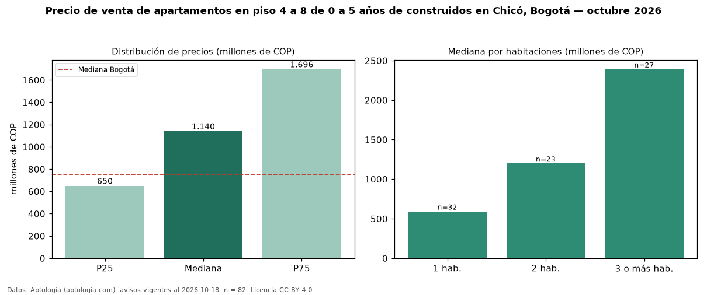

Precio de venta de apartamentos en piso 4 a 8 de 0 a 5 años de construidos en Chicó, Bogotá — octubre 2026
Con 82 avisos vigentes, el precio mediano de apartamentos en piso 4 a 8 de 0 a 5 años de construidos en venta en Chicó, Bogotá es COP 1,14 mil millones. Eso es 16 % menos que la mediana de los apartamentos en piso 4 a 8 en venta de Chicó (COP 1,35 mil millones, n = 292); este segmento reúne el 28 % de esos avisos. Por metro cuadrado, la mediana es COP 13,16 millones/m² (n = 57), 43 % por encima de los apartamentos en piso 4 a 8 en venta de Chicó (COP 9,21 millones/m²). La mitad central de los avisos va de COP 650 millones a COP 1,70 mil millones (razón 2,6), una dispersión alta. El área mediana anunciada es 87 m². El segmento con más oferta es el de 1 habitación (32 avisos, mediana COP 592 millones); pasar de 1 habitación a 3 o más habitaciones cambia la mediana +303 %. La administración mediana declarada es COP 890.000 al mes (n = 60). El estrato más frecuente es 6 (96 % de los avisos con estrato). Datos: Aptología (aptologia.com), CC BY 4.0 — https://www.aptologia.com/venta/bogota/chico. Archivos: PDF, CSV con las cifras y gráfica PNG.

| Avisos únicos | 82 |
|---|---|
| Percentil 25 | COP 650.000.000 |
| Mediana | COP 1.140.000.000 |
| Percentil 75 | COP 1.695.972.750 |
| Mediana por m² | COP 13.157.894 |
Fuente: avisos vigentes de portales inmobiliarios recopilados por Aptología, deduplicados (mínimo 30 avisos únicos por celda). Precios pedidos, no cerrados. Fecha: 2026-10-18.